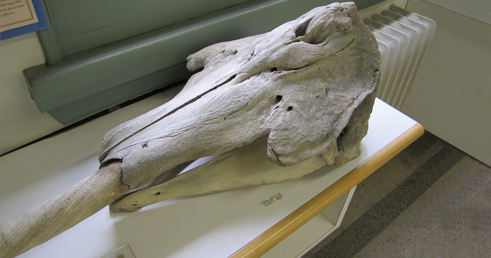

-
O narval é, com certeza, uma das espécies mais curiosas de baleia devido ao seu
chifre que na verdade é uma presa em formato de um espiral fino e longo, que pode
atingir de 1,5 a 3,0 metros de comprimento e chega a pesar 10 kg.
-
As manchas cinzas que pontilham seu corpo aparecem apenas aos dois anos de idade e
se acentuam com o passar do tempo, contrastando com o ventre branco. O narval é a única
espécie do gênero Monodon.
-
Existem apenas dois dentes na mandíbula de um narval, e um deles, o esquerdo, se desenvolve
em uma presa. Cerca de 2 narvais em 1000 têm duas presas – isso acontece se ambos os dentes
começam a crescer, mas isso acontece muito raramente. A presa quebrada desses animais não
cresce novamente.
-
Esses animais preferem se amontoar em pequenos grupos de 5 a 10 indivíduos, mas, ao contrário
das baleias e cachalotes, eles não formam grandes rebanhos.
-
Quanto mais quente a água, mais oxigênio eles precisam para respirar, de modo que no verão eles
vêm com mais frequência para respirar ar do que no inverno.
-
Eles são conhecidos por fazer uma variedade de sons, incluindo assobios, cliques e estalo, que são
usados para a comunicação e ecolocalização.
|
Crânio de um narval

Foi feita uma pesquisa que possui evidências de que o narval seria uma espécie de baleia dos mares do Ártico e
utiliza o chifre para atrair fêmeas ou durante competição por parceiros.
Chifre
.jpg)
O chifre cresce até três metros de comprimento e tem vários usos como perfurar lençóis de gelo,
é um tipo de ecolocalizador para detectar presas e também uma arma de defesa.
Simulação de comparação do tamanho do narval á um ser humano
O narval possui um chifre na cabeça que pode chegar até três metros de comprimento nos machos.
Narval macho e fêmea
Narvais machos possuem essas presas/chifres bem maiores e mais aparentes do que as fêmeas.
Habitat
Normalmente encontrados em águas do Ártico e áreas adjacentes, como o Mar da Gronelândia e o
Mar de Barents.
Aparência "unicórnio do mar"
Os narvais são muitas vezes chamados de "unicórnios do mar"
devido à sua aparência única com uma presa longa, o que levou
a lendas e histórias ao longo da história.
Tabela de classificação científica
| Classificação científica |
Nomeclaturas |
| Reino |
Animalia. |
| Filo |
Cordados. |
| Subfilo |
Vertebrados |
| Classe |
Mamíferos. |
| Ordem |
Artiodátilos. |
| Subordem |
Cetáceos. |
| Família |
Monodontídeos |
| Gênero |
Narval |
| Espécie |
Mondon Monoceros |